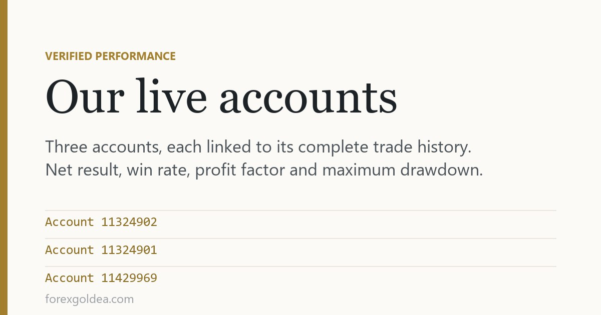

Our live accounts, published in full

Most results pages show one account, one number, and a chart that only goes up. This one shows three accounts including a small one that barely moved, because the difference between them is the part worth reading.
In short three live accounts, each linked to its full trade history. 11324902 — +5,920 USD, 74.3% win rate, profit factor 1.81, and a 24.73% maximum drawdown. 11324901 — +573 USD, 73.1%, PF 2.07, drawdown only 7.5%. 11429969 — +42 USD, 65.2%, PF 1.81, drawdown 20.01%. The last column is the one to read first: it describes what holding these trades actually felt like. No record predicts a future result, including this one.
Three accounts, not one
Each badge opens the account's own page, where every trade sits in the open — the winners, the losers, and the stretch in between where the balance went the wrong way.
What the figures say
| Account | Net | Win rate | Profit factor | Max drawdown |
|---|---|---|---|---|
| 11324902 | +5,920 USD | 74.3% | 1.81 | 24.73% |
| 11324901 | +573 USD | 73.1% | 2.07 | 7.5% |
| 11429969 | +42 USD | 65.2% | 1.81 | 20.01% |
Look along the rows rather than down the profit column. The account that returned the most also endured the deepest fall; the account that returned least had the calmest ride. Same approach, very different experience.
The column most people skip
Net profit is the number that gets screenshotted. Maximum drawdown is the one that decides whether a person actually stays in the trade long enough to collect it.
A 24.73% drawdown means that at some point roughly a quarter of the balance was sitting underwater while the position waited. On paper that resolves. In practice it is the moment most people close everything and walk away — which is why the account with a 7.5% maximum fall may be the more useful record of the two, despite the smaller number beside it.
Why we left the small one in
The third account made forty-two dollars. It would be easy to quietly drop it.
We have kept it because a page containing only strong results tells you nothing about the approach and everything about the curation. A small account over a short window produces a small, noisy figure — that is simply what a short sample looks like. Showing it is the only thing that makes the other two worth believing.
What this proves, and what it does not
- It shows the trades were real, timestamped, and include the losses.
- It shows the shape of each equity curve, which matters more than its endpoint.
- It does not forecast next year. Conditions change and no track record survives that claim.
- It does not describe your result — your position size, your broker's spread, your balance and your patience all change it.
Checking it for yourself
- Open any badge above to reach that account's public page.
- Read maximum drawdown before the profit figure.
- Count the trades — a small number is luck rather than evidence.
- Look at the curve's shape: steady beats a single vertical stretch.
- Ask whether the period covered is long enough to mean anything to you.
How these figures are produced: the numbers come straight from each trading account rather than being entered by hand, and the full trade history sits on the linked page — entries, exits, and the stretch in between where the balance went the wrong way. A record of what happened, not a prediction of what will.
Reader questions
Who verifies these trading results?
The figures come straight from the accounts, and every trade is public on the linked CopyConnectFX page.
Why does one account show only $42 profit?
Small balance, short period — a noisy sample. It stays because publishing only winners would make the page meaningless.
Which of the three accounts is the best record?
It depends on your tolerance — the biggest return came with 24.73% drawdown, another returned less with only 7.5%.
Can I expect the same returns?
No — sizing, balance, broker costs and your own behaviour during drawdowns all change the result.
How current are the numbers on the badges?
They regenerate on each page load, so they are current. Click through for the full history behind the figure.
Where can I see individual trades?
On the linked account page — entries, exits, sizes and running balance are all listed there.
Where this leaves you
Three accounts, published whole — the strong one, the steady one, and the one that barely moved. Read the drawdown column before the profit column, check how many trades sit behind each figure, and treat the set as a record of what happened rather than a promise about what will. That is all any track record is honestly worth, ours included.
Affiliate disclosure: we earn a commission when you open and fund an account through our partner links, at no extra cost to you.